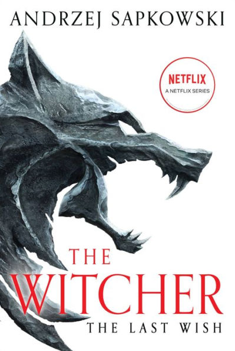
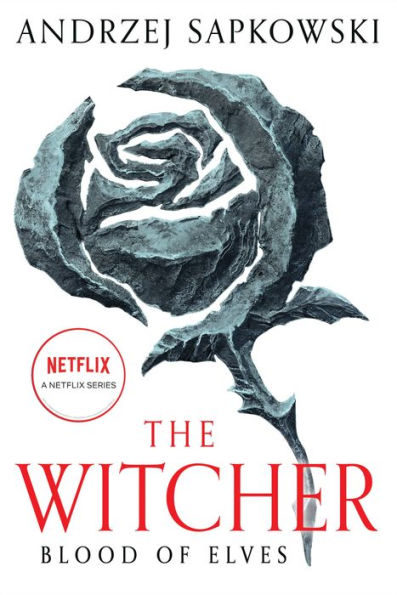
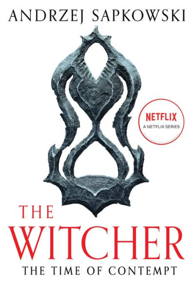

The Last Wish
تأليف: Andrzej Sapkowski
مجموعة من القصص القصيرة التي تقدم الساحر جيرالت، وتكشف عن عالم يتقاطع فيه السحر والمخلوقات الأسطورية والبشر.
اقرأ الآن
Sword of Destiny
تأليف: Andrzej Sapkowski
تتمة لمغامرات جيرالت، تركز على اختياراته العاطفية والقدر الذي يربطه بفتاة شابة اسمها سيري.
تفاصيل

Blood of Elves
تأليف: Andrzej Sapkowski
تبدأ القصة الرئيسية للسلسلة مع تدريب سيري في قلعة الساحرين وتهديدات الحرب القادمة في القارة.
تفاصيل

Time of Contempt
تأليف: Andrzej Sapkowski
تستمر الأحداث مع تصاعد النزاعات السياسية والعسكرية، حيث يجد جيرالت نفسه في وسط مؤامرات خطيرة.
تفاصيل